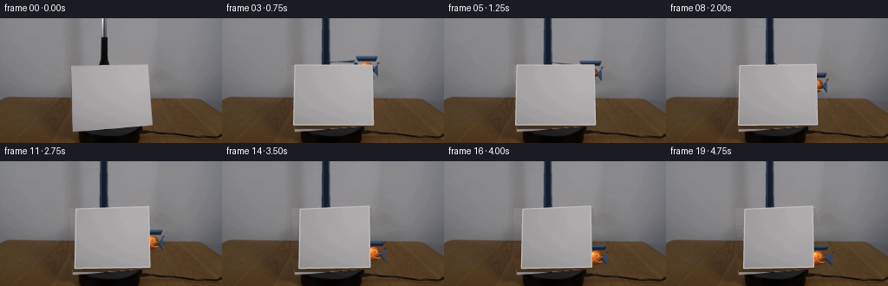
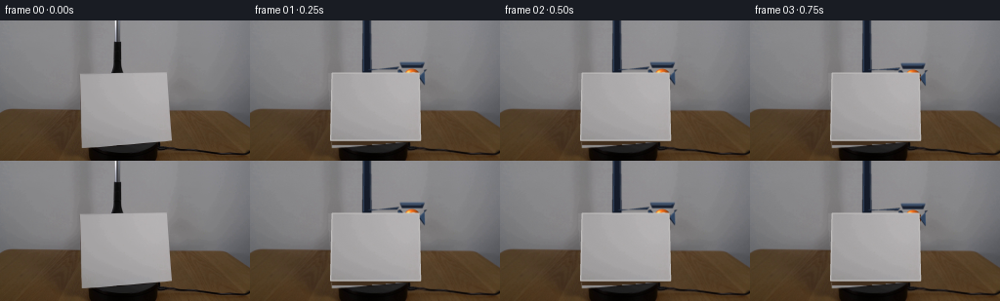
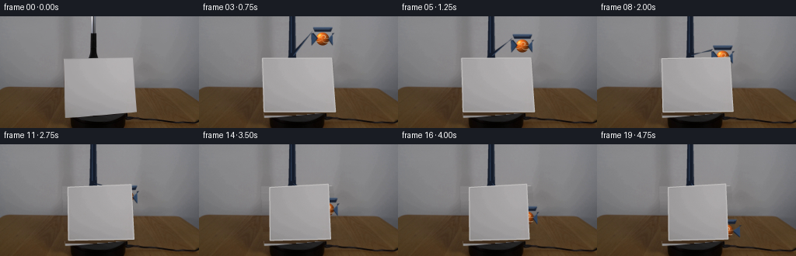
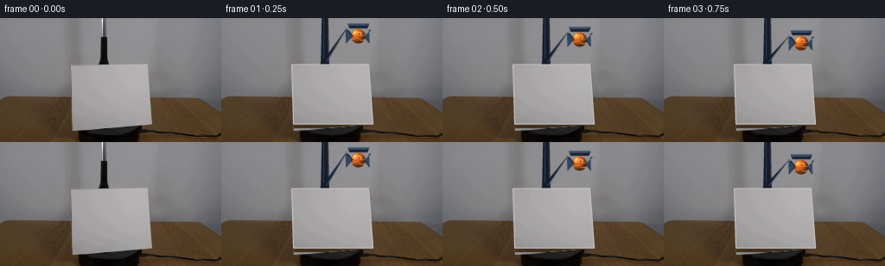
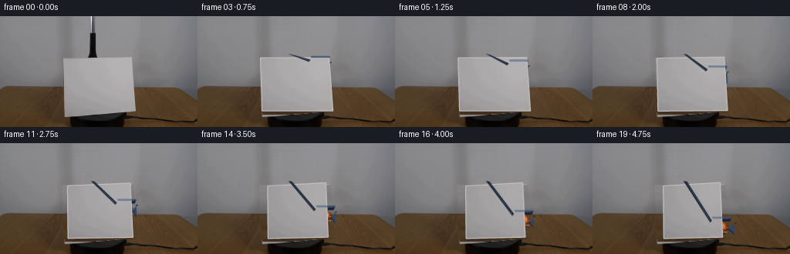
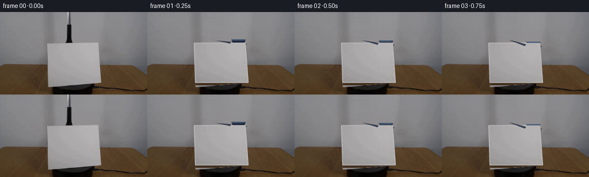
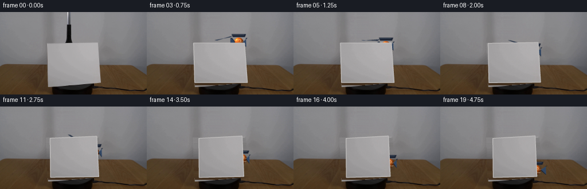
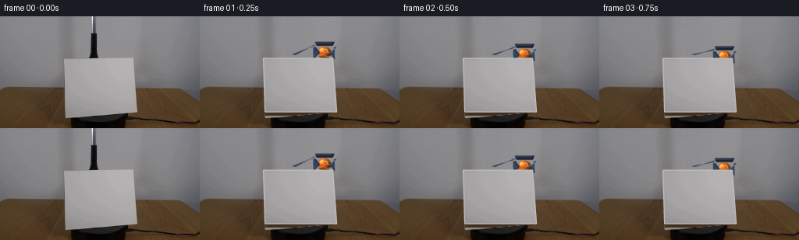
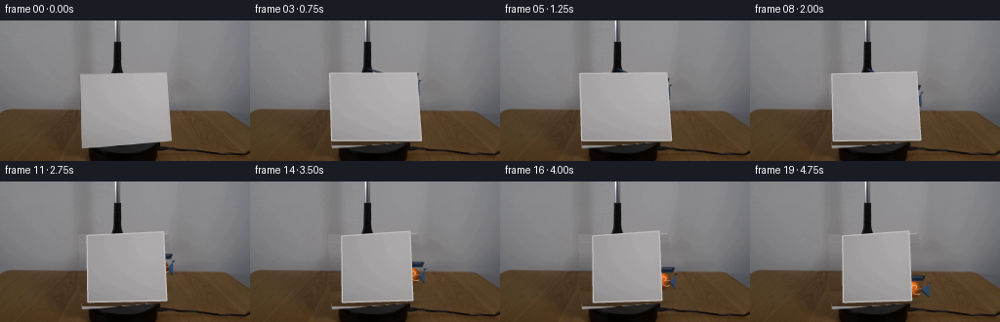
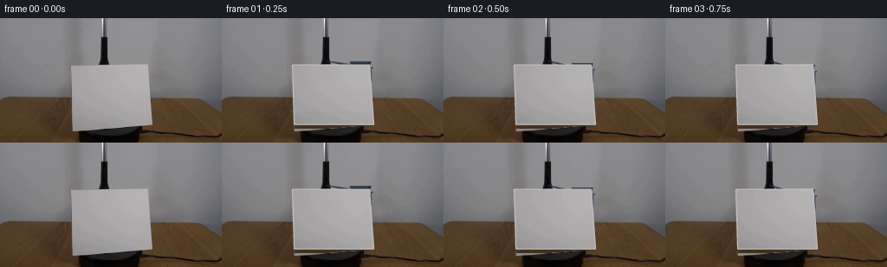

CODING AGENTS AS PIXEL WORLD MODELS
traex/DeepSeek-V4.1-Flash · 0005
点击播放 · 原生 RGB 像素
逐轮保存的候选
回放视频、检查图与代码变化。
每份候选均可单独播放。实际图片检查记录在下方工具轨迹中。
候选 01播放与检查图
点击播放 · 原生 RGB 像素


展开代码变化
--- 上一保存版本
+++ 本次保存版本
@@ -0,0 +1,451 @@
+from pathlib import Path
+
+import cv2
+import numpy as np
+from PIL import Image
+
+import artifact_io
+
+
+W, H, N = 256, 144, 20
+SS = 4
+ROOT = Path(__file__).resolve().parent
+
+SOURCE_QUAD = np.array(
+ [[81.5, 54.0], [170.5, 54.0], [175.5, 123.0], [83.5, 123.0]],
+ dtype=np.float32,
+)
+
+
+def smoothstep(x):
+ x = np.clip(x, 0.0, 1.0)
+ return x * x * (3.0 - 2.0 * x)
+
+
+def build_clean_plate(source):
+ """Remove the card and hanging stem with row-wise scene reconstruction."""
+ src = source.astype(np.float32)
+ fill = src.copy()
+ rng = np.random.default_rng(20261109)
+ grain = rng.normal(0.0, 1.0, (H, W, 1)).astype(np.float32)
+
+ card_mask = np.zeros((H, W), dtype=np.uint8)
+ expanded = SOURCE_QUAD.copy()
+ center = expanded.mean(axis=0)
+ expanded = center + (expanded - center) * 1.035
+ cv2.fillPoly(card_mask, [np.round(expanded).astype(np.int32)], 255)
+
+ # The narrow hanging stem is isolated against the smooth upper wall.
+ for y in range(0, 54):
+ x0, x1 = 110, 131
+ left = src[y, x0 - 5]
+ right = src[y, x1 + 5]
+ for x in range(x0, x1 + 1):
+ a = (x - (x0 - 5)) / ((x1 + 5) - (x0 - 5))
+ fill[y, x] = (1.0 - a) * left + a * right
+ fill[y, x0 : x1 + 1] += grain[y, x0 : x1 + 1] * 0.45
+
+ # Reconstruct the occluded wall/tabletop one scanline at a time.
+ for y in range(54, 125):
+ xs = np.flatnonzero(card_mask[y] > 0)
+ if xs.size == 0:
+ continue
+ x0, x1 = int(xs[0]), int(xs[-1])
+ xl = max(0, x0 - 6)
+ xr = min(W - 1, x1 + 6)
+ left = src[y, xl]
+ right = src[y, xr]
+ for x in range(x0, x1 + 1):
+ a = (x - xl) / max(1, xr - xl)
+ base = (1.0 - a) * left + a * right
+ if y < 92:
+ fill[y, x] = base + grain[y, x] * 0.55
+ else:
+ streak = (
+ 0.8 * np.sin(0.16 * x + 0.43 * y)
+ + 0.45 * np.sin(0.39 * x - 0.11 * y)
+ + 0.25 * np.sin(0.73 * x + 0.21 * y)
+ )
+ fill[y, x] = base + np.array([1.3, 1.0, 0.7]) * streak
+ fill[y, x] += grain[y, x] * np.array([1.4, 1.2, 0.9])
+
+ mask = card_mask.copy()
+ mask[0:54, 110:131] = 255
+ mask = cv2.dilate(mask, np.ones((3, 3), np.uint8), iterations=1)
+ soft = cv2.GaussianBlur(mask.astype(np.float32) / 255.0, (0, 0), 0.9)
+ soft = np.clip(soft * 1.15, 0.0, 1.0)[..., None]
+ clean = fill * soft + src * (1.0 - soft)
+
+ # Suppress the last bright card-edge pixels at the bottom boundary.
+ for yy in range(124, 128):
+ for xx in range(80, 180):
+ if (clean[yy, xx] > 135.0).any():
+ left = clean[yy, 76]
+ right = clean[yy, 184]
+ a = (xx - 76) / (184 - 76)
+ clean[yy, xx] = (1.0 - a) * left + a * right
+
+ return np.clip(clean, 0, 255).astype(np.uint8)
+
+
+def extract_card_texture(source):
+ rect = np.array([[0, 0], [180, 0], [180, 138], [0, 138]], dtype=np.float32)
+ transform = cv2.getPerspectiveTransform(SOURCE_QUAD, rect)
+ texture = cv2.warpPerspective(
+ source,
+ transform,
+ (181, 139),
+ flags=cv2.INTER_CUBIC,
+ borderMode=cv2.BORDER_REPLICATE,
+ )
+ return cv2.GaussianBlur(texture, (0, 0), 0.28)
+
+
+def card_quad(t):
+ # Clockwise turn about the card's vertical axis.
+ theta = np.deg2rad(43.0 * smoothstep(t))
+ s = np.sin(theta)
+ c = np.cos(theta)
+ width_scale = 0.55 + 0.45 * c
+ cx = 128.5 + 2.0 * s
+
+ half_top = 44.5 * width_scale
+ half_bottom = 46.0 * width_scale
+ tl = (cx - half_top, 54.0 + 1.8 * s)
+ tr = (cx + half_top, 54.0 - 3.4 * s)
+ br = (cx + half_bottom, 123.0 - 1.3 * s)
+ bl = (cx - half_bottom, 123.0 + 0.8 * s)
+ return np.array([tl, tr, br, bl], dtype=np.float32), theta
+
+
+def alpha_composite(dst, color, alpha, region):
+ y0, y1, x0, x1 = region
+ a = np.clip(alpha, 0.0, 1.0)[..., None]
+ dst[y0:y1, x0:x1] = dst[y0:y1, x0:x1] * (1.0 - a) + color * a
+
+
+def fill_polygon_soft(canvas, points, color, alpha=1.0, blur=0.0):
+ overlay = np.empty_like(canvas)
+ mask = np.zeros(canvas.shape[:2], dtype=np.uint8)
+ pts = np.round(np.asarray(points) * SS).astype(np.int32)
+ cv2.fillPoly(mask, [pts], 255)
+ if blur > 0:
+ mask = cv2.GaussianBlur(mask, (0, 0), blur * SS)
+ overlay[:] = np.asarray(color, dtype=np.float32)
+ alpha_composite(
+ canvas,
+ overlay,
+ (mask.astype(np.float32) / 255.0) * alpha,
+ (0, canvas.shape[0], 0, canvas.shape[1]),
+ )
+
+
+def draw_soft_shadow(canvas, center, radii, color=(42, 31, 22), strength=0.30):
+ cx, cy = center
+ rx, ry = radii
+ overlay = np.empty_like(canvas)
+ mask = np.zeros(canvas.shape[:2], dtype=np.uint8)
+ cv2.ellipse(
+ mask,
+ (int(cx * SS), int(cy * SS)),
+ (int(rx * SS), int(ry * SS)),
+ 0,
+ 0,
+ 360,
+ 255,
+ -1,
+ )
+ mask = cv2.GaussianBlur(mask, (0, 0), max(1.0, 1.8 * SS))
+ overlay[:] = np.asarray(color, dtype=np.float32)
+ alpha_composite(
+ canvas,
+ overlay,
+ (mask.astype(np.float32) / 255.0) * strength,
+ (0, canvas.shape[0], 0, canvas.shape[1]),
+ )
+
+
+def draw_ball(canvas, cx, cy, radius):
+ pad = radius + 3.0
+ x0 = max(0, int(np.floor((cx - pad) * SS)))
+ x1 = min(canvas.shape[1], int(np.ceil((cx + pad) * SS)))
+ y0 = max(0, int(np.floor((cy - pad) * SS)))
+ y1 = min(canvas.shape[0], int(np.ceil((cy + pad) * SS)))
+ if x1 <= x0 or y1 <= y0:
+ return
+
+ yy, xx = np.mgrid[y0:y1, x0:x1].astype(np.float32)
+ px = (xx + 0.5) / SS
+ py = (yy + 0.5) / SS
+ nx = (px - cx) / radius
+ ny = (py - cy) / radius
+ rr = nx * nx + ny * ny
+ inside = rr <= 1.0
+ nz = np.sqrt(np.clip(1.0 - rr, 0.0, 1.0))
+
+ light = np.array([-0.48, -0.56, 0.67], dtype=np.float32)
+ light /= np.linalg.norm(light)
+ diffuse = np.clip(nx * light[0] + ny * light[1] + nz * light[2], 0.0, 1.0)
+ base = np.array([231.0, 103.0, 24.0], dtype=np.float32)
+ color = base[None, None, :] * (0.40 + 0.72 * diffuse[..., None])
+ spec = np.clip(diffuse, 0.0, 1.0) ** 22
+ color += spec[..., None] * np.array([165.0, 128.0, 80.0], dtype=np.float32)
+ rim = np.clip((nx + 0.35) * 0.5 + 0.5, 0.0, 1.0) * (1.0 - nz) * 12.0
+ color += rim[..., None] * np.array([0.25, 0.55, 1.0], dtype=np.float32)
+
+ # Curved cream seam bands.
+ phi = np.arctan2(ny, nx + 1e-6)
+ seam_curve = 0.57 * np.sin(1.45 * phi + 0.35)
+ seam = np.minimum(
+ np.abs(ny - seam_curve),
+ np.abs(ny + 0.86 * seam_curve + 0.05),
+ )
+ seam_mask = np.exp(-((seam / 0.055) ** 2)) * inside
+ color = color * (1.0 - 0.70 * seam_mask[..., None]) + np.array(
+ [238.0, 226.0, 188.0], dtype=np.float32
+ ) * (0.70 * seam_mask[..., None])
+ color *= (0.90 + 0.10 * np.clip(nz, 0.0, 1.0))[..., None]
+ color = np.clip(color, 0.0, 255.0)
+
+ alpha = np.clip((radius - np.sqrt(np.maximum(rr, 0.0)) * radius) * SS + 0.5, 0.0, 1.0)
+ alpha *= inside
+ alpha_composite(canvas, color, alpha, (y0, y1, x0, x1))
+
+
+def draw_claw(canvas, cx, cy, radius, open_amount=0.0):
+ navy = np.array([24.0, 32.0, 48.0], dtype=np.float32)
+ blue = np.array([55.0, 82.0, 116.0], dtype=np.float32)
+ silver = np.array([122.0, 139.0, 157.0], dtype=np.float32)
+
+ spread = 2.0 + 4.0 * open_amount
+ for sign in (-1.0, 1.0):
+ x0 = cx + sign * (radius + 3.0 + spread)
+ x1 = cx + sign * (radius - 1.5 + spread * 0.25)
+ top = cy - radius * 0.75
+ bottom = cy + radius * 0.85
+ pts = np.array(
+ [
+ [x0 - 1.2, top - 1.0],
+ [x0 + 1.5, top - 1.5],
+ [x1 + 1.0, cy - 1.0],
+ [x1 - 0.3, cy + 0.7],
+ [x0 - 0.8, bottom + 1.0],
+ ],
+ dtype=np.float32,
+ )
+ fill_polygon_soft(canvas, pts, navy, alpha=0.98, blur=0.35)
+ edge = np.array(
+ [
+ [x0 - 0.9, top - 0.2],
+ [x0 + 0.1, top - 0.6],
+ [x1 - 0.2, cy - 0.9],
+ [x0 - 0.5, bottom + 0.2],
+ ],
+ dtype=np.float32,
+ )
+ fill_polygon_soft(canvas, edge, blue, alpha=0.72, blur=0.2)
+
+ wrist = np.array(
+ [
+ [cx - radius - 4.0, cy - radius - 6.0],
+ [cx + radius + 4.0, cy - radius - 6.0],
+ [cx + radius + 2.0, cy - radius - 1.0],
+ [cx - radius - 2.0, cy - radius - 1.0],
+ ],
+ dtype=np.float32,
+ )
+ fill_polygon_soft(canvas, wrist, navy, alpha=0.98, blur=0.35)
+ highlight = np.array(
+ [
+ [cx - radius - 3.0, cy - radius - 5.0],
+ [cx + radius + 1.0, cy - radius - 5.0],
+ [cx + radius + 0.5, cy - radius - 4.2],
+ [cx - radius - 2.5, cy - radius - 4.2],
+ ],
+ dtype=np.float32,
+ )
+ fill_polygon_soft(canvas, highlight, silver, alpha=0.42, blur=0.15)
+
+
+def draw_tool(canvas, ball_center, ball_radius):
+ navy = np.array([20.0, 27.0, 41.0], dtype=np.float32)
+ edge_blue = np.array([67.0, 93.0, 128.0], dtype=np.float32)
+ metal = np.array([132.0, 144.0, 157.0], dtype=np.float32)
+
+ rail = np.array(
+ [
+ [115.5, 0.0],
+ [123.8, 0.0],
+ [124.3, 53.5],
+ [123.2, 61.0],
+ [116.2, 61.0],
+ [115.0, 53.0],
+ ],
+ dtype=np.float32,
+ )
+ fill_polygon_soft(canvas, rail, navy, alpha=1.0, blur=0.35)
+ fill_polygon_soft(
+ canvas,
+ np.array([[116.2, 0], [117.0, 0], [116.8, 52], [116.0, 52]], dtype=np.float32),
+ edge_blue,
+ alpha=0.55,
+ blur=0.12,
+ )
+ fill_polygon_soft(
+ canvas,
+ np.array([[122.6, 0], [123.5, 0], [123.8, 50], [123.0, 50]], dtype=np.float32),
+ metal,
+ alpha=0.30,
+ blur=0.12,
+ )
+
+ bx, by = ball_center
+ elbow = np.array(
+ [
+ [120.0, 50.0],
+ [123.0, 51.0],
+ [bx - ball_radius - 5.0, by - ball_radius - 2.0],
+ [bx - ball_radius - 7.0, by - ball_radius + 0.5],
+ ],
+ dtype=np.float32,
+ )
+ fill_polygon_soft(canvas, elbow, navy, alpha=0.98, blur=0.35)
+ fill_polygon_soft(
+ canvas,
+ np.array(
+ [
+ [121.0, 50.4],
+ [122.0, 50.7],
+ [bx - ball_radius - 5.7, by - ball_radius - 1.4],
+ [bx - ball_radius - 6.3, by - ball_radius - 0.5],
+ ],
+ dtype=np.float32,
+ ),
+ edge_blue,
+ alpha=0.62,
+ blur=0.12,
+ )
+
+ collar = np.array(
+ [
+ [bx - ball_radius - 4.0, by - ball_radius - 7.0],
+ [bx + ball_radius + 4.0, by - ball_radius - 7.0],
+ [bx + ball_radius + 3.0, by - ball_radius - 4.5],
+ [bx - ball_radius - 3.0, by - ball_radius - 4.5],
+ ],
+ dtype=np.float32,
+ )
+ fill_polygon_soft(canvas, collar, edge_blue, alpha=0.55, blur=0.2)
+
+
+def render_card(canvas, texture, quad, theta):
+ foot_x = float(quad[2, 0] + quad[3, 0]) * 0.5
+ draw_soft_shadow(
+ canvas,
+ (foot_x, 124.5),
+ (43.0, 3.2),
+ color=(31, 23, 17),
+ strength=0.26,
+ )
+
+ rect = np.array([[0, 0], [180, 0], [180, 138], [0, 138]], dtype=np.float32)
+ dst = quad * SS
+ transform = cv2.getPerspectiveTransform(rect, dst.astype(np.float32))
+ warped = cv2.warpPerspective(
+ texture,
+ transform,
+ (canvas.shape[1], canvas.shape[0]),
+ flags=cv2.INTER_CUBIC,
+ borderMode=cv2.BORDER_REPLICATE,
+ ).astype(np.float32)
+
+ mask = cv2.warpPerspective(
+ np.full((139, 181), 255, dtype=np.uint8),
+ transform,
+ (canvas.shape[1], canvas.shape[0]),
+ flags=cv2.INTER_LINEAR,
+ borderMode=cv2.BORDER_CONSTANT,
+ borderValue=0,
+ ).astype(np.float32) / 255.0
+ mask = cv2.GaussianBlur(mask, (0, 0), 0.35 * SS)
+
+ brightness = 1.0 - 0.055 * np.sin(theta)
+ warped *= brightness
+ yy = np.linspace(-1.0, 1.0, warped.shape[0], dtype=np.float32)[:, None, None]
+ warped += yy * np.array([2.2, 2.1, 2.0], dtype=np.float32)
+ warped = np.clip(warped, 0.0, 255.0)
+ alpha_composite(canvas, warped, mask, (0, canvas.shape[0], 0, canvas.shape[1]))
+
+ pts = np.round(dst).astype(np.int32)
+ cv2.polylines(
+ canvas,
+ [pts],
+ True,
+ (191.0, 189.0, 188.0),
+ max(1, int(0.75 * SS)),
+ lineType=cv2.LINE_AA,
+ )
+
+
+def render_frame(clean, texture, t):
+ canvas = cv2.resize(
+ clean, (W * SS, H * SS), interpolation=cv2.INTER_CUBIC
+ ).astype(np.float32)
+
+ rot = smoothstep((t - 0.04) / 0.92)
+ quad, theta = card_quad(rot)
+
+ ball_u = smoothstep((t - 0.10) / 0.78)
+ ball_x = 166.0 + 9.0 * smoothstep((t - 0.05) / 0.55)
+ ball_y = 58.0 + 54.0 * ball_u
+ if t > 0.88:
+ ball_y -= 1.5 * np.exp(-((t - 0.88) / 0.06) ** 2)
+ ball_radius = 8.4
+
+ draw_soft_shadow(
+ canvas,
+ (ball_x + 1.0, min(117.0, ball_y + 9.5)),
+ (9.5, 2.4),
+ color=(40, 29, 18),
+ strength=0.22,
+ )
+ draw_ball(canvas, ball_x, ball_y, ball_radius)
+ draw_claw(
+ canvas,
+ ball_x,
+ ball_y,
+ ball_radius,
+ open_amount=smoothstep((t - 0.84) / 0.12),
+ )
+ draw_tool(canvas, (ball_x, ball_y), ball_radius)
+ render_card(canvas, texture, quad, theta)
+
+ rng = np.random.default_rng(1000 + int(round(t * 19)))
+ noise = rng.normal(0.0, 1.35, (canvas.shape[0], canvas.shape[1], 1)).astype(np.float32)
+ canvas += noise
+ canvas = np.clip(canvas, 0.0, 255.0)
+ return cv2.resize(canvas, (W, H), interpolation=cv2.INTER_AREA)
+
+
+def main():
+ source = np.array(Image.open(ROOT / "first_frame.png").convert("RGB"), dtype=np.uint8)
+ clean = build_clean_plate(source)
+ texture = extract_card_texture(source)
+
+ frames = []
+ for i in range(N):
+ if i == 0:
+ frames.append(source.copy())
+ continue
+ frame = render_frame(clean, texture, i / (N - 1))
+ frames.append(np.clip(np.round(frame), 0, 255).astype(np.uint8))
+
+ frames = np.stack(frames, axis=0)
+ assert frames.shape == (20, 144, 256, 3), frames.shape
+ assert frames.dtype == np.uint8
+ assert np.array_equal(frames[0], source)
+ artifact_io.save(frames, ROOT)
+
+
+if __name__ == "__main__":
+ main()
候选 02播放与检查图
点击播放 · 原生 RGB 像素


展开代码变化
--- 上一保存版本
+++ 本次保存版本
@@ -103,18 +103,19 @@
def card_quad(t):
# Clockwise turn about the card's vertical axis.
- theta = np.deg2rad(43.0 * smoothstep(t))
+ theta = np.deg2rad(58.0 * smoothstep(t))
s = np.sin(theta)
c = np.cos(theta)
- width_scale = 0.55 + 0.45 * c
- cx = 128.5 + 2.0 * s
+ width_scale = 0.64 + 0.36 * c
+ cx_top = 126.0 + 3.0 * s
+ cx_bottom = 129.5 + 1.0 * s
half_top = 44.5 * width_scale
half_bottom = 46.0 * width_scale
- tl = (cx - half_top, 54.0 + 1.8 * s)
- tr = (cx + half_top, 54.0 - 3.4 * s)
- br = (cx + half_bottom, 123.0 - 1.3 * s)
- bl = (cx - half_bottom, 123.0 + 0.8 * s)
+ tl = (cx_top - half_top, 54.0 + 1.8 * s)
+ tr = (cx_top + half_top, 54.0 - 3.4 * s)
+ br = (cx_bottom + half_bottom, 123.0 - 1.3 * s)
+ bl = (cx_bottom - half_bottom, 123.0 + 0.8 * s)
return np.array([tl, tr, br, bl], dtype=np.float32), theta
@@ -274,38 +275,38 @@
rail = np.array(
[
- [115.5, 0.0],
+ [116.2, 0.0],
[123.8, 0.0],
- [124.3, 53.5],
- [123.2, 61.0],
- [116.2, 61.0],
- [115.0, 53.0],
+ [124.4, 50.0],
+ [125.0, 55.0],
+ [114.2, 55.0],
+ [115.2, 50.0],
],
dtype=np.float32,
)
- fill_polygon_soft(canvas, rail, navy, alpha=1.0, blur=0.35)
+ fill_polygon_soft(canvas, rail, navy, alpha=1.0, blur=0.25)
fill_polygon_soft(
canvas,
- np.array([[116.2, 0], [117.0, 0], [116.8, 52], [116.0, 52]], dtype=np.float32),
+ np.array([[118.2, 0], [119.1, 0], [118.9, 47], [118.0, 47]], dtype=np.float32),
edge_blue,
- alpha=0.55,
- blur=0.12,
+ alpha=0.48,
+ blur=0.10,
)
fill_polygon_soft(
canvas,
- np.array([[122.6, 0], [123.5, 0], [123.8, 50], [123.0, 50]], dtype=np.float32),
+ np.array([[122.7, 0], [123.5, 0], [123.8, 46], [123.0, 46]], dtype=np.float32),
metal,
- alpha=0.30,
- blur=0.12,
+ alpha=0.20,
+ blur=0.10,
)
bx, by = ball_center
elbow = np.array(
[
- [120.0, 50.0],
- [123.0, 51.0],
- [bx - ball_radius - 5.0, by - ball_radius - 2.0],
- [bx - ball_radius - 7.0, by - ball_radius + 0.5],
+ [118.0, 49.0],
+ [122.5, 50.0],
+ [bx - ball_radius - 4.5, by - ball_radius - 2.0],
+ [bx - ball_radius - 6.5, by - ball_radius + 0.5],
],
dtype=np.float32,
)
@@ -395,20 +396,12 @@
rot = smoothstep((t - 0.04) / 0.92)
quad, theta = card_quad(rot)
- ball_u = smoothstep((t - 0.10) / 0.78)
- ball_x = 166.0 + 9.0 * smoothstep((t - 0.05) / 0.55)
- ball_y = 58.0 + 54.0 * ball_u
- if t > 0.88:
- ball_y -= 1.5 * np.exp(-((t - 0.88) / 0.06) ** 2)
+ ball_x = 158.5 + 8.5 * smoothstep(t)
+ ball_y = 18.0 + 94.0 * (t ** 1.15)
+ if t > 0.90:
+ ball_y -= 1.4 * np.exp(-((t - 0.90) / 0.055) ** 2)
ball_radius = 8.4
- draw_soft_shadow(
- canvas,
- (ball_x + 1.0, min(117.0, ball_y + 9.5)),
- (9.5, 2.4),
- color=(40, 29, 18),
- strength=0.22,
- )
draw_ball(canvas, ball_x, ball_y, ball_radius)
draw_claw(
canvas,
候选 03播放与检查图
点击播放 · 原生 RGB 像素


展开代码变化
--- 上一保存版本
+++ 本次保存版本
@@ -271,34 +271,6 @@
def draw_tool(canvas, ball_center, ball_radius):
navy = np.array([20.0, 27.0, 41.0], dtype=np.float32)
edge_blue = np.array([67.0, 93.0, 128.0], dtype=np.float32)
- metal = np.array([132.0, 144.0, 157.0], dtype=np.float32)
-
- rail = np.array(
- [
- [116.2, 0.0],
- [123.8, 0.0],
- [124.4, 50.0],
- [125.0, 55.0],
- [114.2, 55.0],
- [115.2, 50.0],
- ],
- dtype=np.float32,
- )
- fill_polygon_soft(canvas, rail, navy, alpha=1.0, blur=0.25)
- fill_polygon_soft(
- canvas,
- np.array([[118.2, 0], [119.1, 0], [118.9, 47], [118.0, 47]], dtype=np.float32),
- edge_blue,
- alpha=0.48,
- blur=0.10,
- )
- fill_polygon_soft(
- canvas,
- np.array([[122.7, 0], [123.5, 0], [123.8, 46], [123.0, 46]], dtype=np.float32),
- metal,
- alpha=0.20,
- blur=0.10,
- )
bx, by = ball_center
elbow = np.array(
@@ -396,8 +368,8 @@
rot = smoothstep((t - 0.04) / 0.92)
quad, theta = card_quad(rot)
- ball_x = 158.5 + 8.5 * smoothstep(t)
- ball_y = 18.0 + 94.0 * (t ** 1.15)
+ ball_x = 158.5 + 9.0 * smoothstep(t)
+ ball_y = 61.0 + 50.0 * (t ** 1.15)
if t > 0.90:
ball_y -= 1.4 * np.exp(-((t - 0.90) / 0.055) ** 2)
ball_radius = 8.4
@@ -410,8 +382,8 @@
ball_radius,
open_amount=smoothstep((t - 0.84) / 0.12),
)
+ render_card(canvas, texture, quad, theta)
draw_tool(canvas, (ball_x, ball_y), ball_radius)
- render_card(canvas, texture, quad, theta)
rng = np.random.default_rng(1000 + int(round(t * 19)))
noise = rng.normal(0.0, 1.35, (canvas.shape[0], canvas.shape[1], 1)).astype(np.float32)
候选 04播放与检查图
点击播放 · 原生 RGB 像素

展开代码变化
--- 上一保存版本
+++ 本次保存版本
@@ -268,9 +268,12 @@
fill_polygon_soft(canvas, highlight, silver, alpha=0.42, blur=0.15)
-def draw_tool(canvas, ball_center, ball_radius):
+def draw_tool(canvas, ball_center, ball_radius, show_arm=True):
navy = np.array([20.0, 27.0, 41.0], dtype=np.float32)
edge_blue = np.array([67.0, 93.0, 128.0], dtype=np.float32)
+
+ if not show_arm:
+ return
bx, by = ball_center
elbow = np.array(
@@ -365,16 +368,25 @@
clean, (W * SS, H * SS), interpolation=cv2.INTER_CUBIC
).astype(np.float32)
+ # Keep the original photographed tool stem pixel-faithful.
+ source_stem = cv2.resize(
+ clean[0:54, 112:129], (17 * SS, 54 * SS), interpolation=cv2.INTER_NEAREST
+ )
+ canvas[0 : 54 * SS, 112 * SS : 129 * SS] = source_stem
+
rot = smoothstep((t - 0.04) / 0.92)
quad, theta = card_quad(rot)
- ball_x = 158.5 + 9.0 * smoothstep(t)
- ball_y = 61.0 + 50.0 * (t ** 1.15)
+ ball_x = 160.0 + 7.5 * smoothstep(t)
+ ball_y = 18.0 + 93.0 * (t ** 1.15)
if t > 0.90:
ball_y -= 1.4 * np.exp(-((t - 0.90) / 0.055) ** 2)
ball_radius = 8.4
- draw_ball(canvas, ball_x, ball_y, ball_radius)
+ # Above the card, only the wrist and fingers are visible; once the ball
+ # crosses the top edge, the card correctly becomes the occluder.
+ if ball_y - ball_radius < 53.0:
+ draw_ball(canvas, ball_x, ball_y, ball_radius)
draw_claw(
canvas,
ball_x,
@@ -383,7 +395,7 @@
open_amount=smoothstep((t - 0.84) / 0.12),
)
render_card(canvas, texture, quad, theta)
- draw_tool(canvas, (ball_x, ball_y), ball_radius)
+ draw_tool(canvas, (ball_x, ball_y), ball_radius, show_arm=ball_y < 80.0)
rng = np.random.default_rng(1000 + int(round(t * 19)))
noise = rng.normal(0.0, 1.35, (canvas.shape[0], canvas.shape[1], 1)).astype(np.float32)
候选 05播放与检查图
候选 06播放与检查图
点击播放 · 原生 RGB 像素


展开代码变化
--- 上一保存版本
+++ 本次保存版本
@@ -213,7 +213,7 @@
alpha_composite(canvas, color, alpha, (y0, y1, x0, x1))
-def draw_claw(canvas, cx, cy, radius, open_amount=0.0):
+def draw_claw(canvas, cx, cy, radius, open_amount=0.0, show_arm=True):
navy = np.array([24.0, 32.0, 48.0], dtype=np.float32)
blue = np.array([55.0, 82.0, 116.0], dtype=np.float32)
silver = np.array([122.0, 139.0, 157.0], dtype=np.float32)
@@ -267,13 +267,39 @@
)
fill_polygon_soft(canvas, highlight, silver, alpha=0.42, blur=0.15)
-
-def draw_tool(canvas, ball_center, ball_radius, show_arm=True):
+ if show_arm:
+ navy = np.array([24.0, 32.0, 48.0], dtype=np.float32)
+ edge_blue = np.array([67.0, 93.0, 128.0], dtype=np.float32)
+ elbow = np.array(
+ [
+ [118.5, 49.0],
+ [122.5, 49.5],
+ [cx - radius - 3.2, cy - radius - 3.0],
+ [cx - radius - 6.0, cy - radius - 0.8],
+ ],
+ dtype=np.float32,
+ )
+ fill_polygon_soft(canvas, elbow, navy, alpha=0.98, blur=0.35)
+ fill_polygon_soft(
+ canvas,
+ np.array(
+ [
+ [120.0, 49.3],
+ [121.2, 49.5],
+ [cx - radius - 4.0, cy - radius - 2.4],
+ [cx - radius - 4.8, cy - radius - 1.7],
+ ],
+ dtype=np.float32,
+ ),
+ edge_blue,
+ alpha=0.62,
+ blur=0.12,
+ )
+
+
+def draw_tool(canvas, ball_center, ball_radius):
navy = np.array([20.0, 27.0, 41.0], dtype=np.float32)
edge_blue = np.array([67.0, 93.0, 128.0], dtype=np.float32)
-
- if not show_arm:
- return
bx, by = ball_center
elbow = np.array(
@@ -378,24 +404,23 @@
quad, theta = card_quad(rot)
ball_x = 160.0 + 7.5 * smoothstep(t)
- ball_y = 18.0 + 93.0 * (t ** 1.15)
+ ball_y = 45.0 + 66.0 * (t ** 1.15)
if t > 0.90:
ball_y -= 1.4 * np.exp(-((t - 0.90) / 0.055) ** 2)
ball_radius = 8.4
# Above the card, only the wrist and fingers are visible; once the ball
# crosses the top edge, the card correctly becomes the occluder.
- if ball_y - ball_radius < 53.0:
- draw_ball(canvas, ball_x, ball_y, ball_radius)
+ draw_ball(canvas, ball_x, ball_y, ball_radius)
draw_claw(
canvas,
ball_x,
ball_y,
ball_radius,
open_amount=smoothstep((t - 0.84) / 0.12),
+ show_arm=ball_y < 84.0,
)
render_card(canvas, texture, quad, theta)
- draw_tool(canvas, (ball_x, ball_y), ball_radius, show_arm=ball_y < 80.0)
rng = np.random.default_rng(1000 + int(round(t * 19)))
noise = rng.normal(0.0, 1.35, (canvas.shape[0], canvas.shape[1], 1)).astype(np.float32)
候选 07播放与检查图
点击播放 · 原生 RGB 像素


展开代码变化
--- 上一保存版本
+++ 本次保存版本
@@ -103,7 +103,7 @@
def card_quad(t):
# Clockwise turn about the card's vertical axis.
- theta = np.deg2rad(58.0 * smoothstep(t))
+ theta = np.deg2rad(70.0 * smoothstep(t))
s = np.sin(theta)
c = np.cos(theta)
width_scale = 0.64 + 0.36 * c
@@ -389,22 +389,22 @@
)
-def render_frame(clean, texture, t):
+def render_frame(source, clean, texture, t):
canvas = cv2.resize(
clean, (W * SS, H * SS), interpolation=cv2.INTER_CUBIC
).astype(np.float32)
# Keep the original photographed tool stem pixel-faithful.
source_stem = cv2.resize(
- clean[0:54, 112:129], (17 * SS, 54 * SS), interpolation=cv2.INTER_NEAREST
+ source[0:54, 112:129], (17 * SS, 54 * SS), interpolation=cv2.INTER_NEAREST
)
canvas[0 : 54 * SS, 112 * SS : 129 * SS] = source_stem
rot = smoothstep((t - 0.04) / 0.92)
quad, theta = card_quad(rot)
- ball_x = 160.0 + 7.5 * smoothstep(t)
- ball_y = 45.0 + 66.0 * (t ** 1.15)
+ ball_x = 160.0 + 7.0 * smoothstep(t)
+ ball_y = 63.0 + 48.0 * (t ** 1.15)
if t > 0.90:
ball_y -= 1.4 * np.exp(-((t - 0.90) / 0.055) ** 2)
ball_radius = 8.4
@@ -439,7 +439,7 @@
if i == 0:
frames.append(source.copy())
continue
- frame = render_frame(clean, texture, i / (N - 1))
+ frame = render_frame(source, clean, texture, i / (N - 1))
frames.append(np.clip(np.round(frame), 0, 255).astype(np.uint8))
frames = np.stack(frames, axis=0)
可观测工具轨迹
实际执行的命令与返回图片。
命令 1exit 0
/bin/bash -c "pwd && rg --files -g '"'!*.git*'"'"
命令 2exit 0
/bin/bash -c "sed -n '1,240p' prompt.txt"
命令 3exit 0
/bin/bash -c "sed -n '1,300p' GENERATION_RULES.md"
命令 4exit 127
/bin/bash -c "file first_frame.png && identify -verbose first_frame.png | sed -n '1,80p'"
命令 5exit 0
/bin/bash -c "python - <<'PY'
from PIL import Image
import numpy as np
im=Image.open('first_frame.png')
print(im.mode, im.size)
a=np.array(im)
print(a.shape,a.dtype,a.min(),a.max())
print('corners',a[0,0],a[0,-1],a[-1,0],a[-1,-1])
print('mean',a.reshape(-1,3).mean(0))
PY"命令 6exit 0
/bin/bash -c "python - <<'PY'
from PIL import Image
import numpy as np
im=np.array(Image.open('first_frame.png')).astype(float)
# downsample average to 64x36
h,w=im.shape[:2]; out=[]
for y in range(0,h,4):
row=''
for x in range(0,w,4):
r,g,b=im[y:y+4,x:x+4].mean((0,1))
Y=.299*r+.587*g+.114*b
chars=' .:-=+*#%@'
row+=chars[min(9,int(Y/256*10))]
out.append(row)
print('\\n'.join(out))
PY"命令 7exit 0
/bin/bash -c "python - <<'PY'
from PIL import Image
import numpy as np
im=np.array(Image.open('first_frame.png'))
# bounding boxes by color families
r,g,b=[im[:,:,i] for i in range(3)]
masks={
'orange':(r>100)&(r>g*1.35)&(g>b*1.3),
'blue':(b>r*1.25)&(b>g*1.1)&(b>50),
'black':(r<45)&(g<45)&(b<45),
'white':(r>160)&(g>160)&(b>160),
'wood':(r>80)&(r>g*1.25)&(g>b*1.15),
}
for k,m in masks.items():
ys,xs=np.where(m)
print(k,'n',len(xs),'bbox', (xs.min(),ys.min(),xs.max(),ys.max()) if len(xs) else None,'mean',im[m].mean(0) if len(xs) else None)
# sample grid colors every 16 px, classify code
for y in range(8,144,16):
row=''
for x in range(8,256,16):
r,g,b=im[y,x]
if r>100 and r>g*1.35 and g>b*1.3: c='O'
elif b>r*1.25 and b>g*1.1 and b>50: c='B'
elif r<45 and g<45 and b<45:c='K'
elif r>160 and g>160 and b>160:c='W'
elif r>g*1.25 and g>b*1.15:c='w'
else:c='.'
row+=c
print(f'{y:3d} '+row)
# orange coordinates histogram
m=masks['orange']; ys,xs=np.where(m)
if len(xs):
print('orange x quantiles',np.quantile(xs,[0,.05,.25,.5,.75,.95,1]))
print('orange y quantiles',np.quantile(ys,[0,.05,.25,.5,.75,.95,1]))
PY"命令 8exit 0
/bin/bash -c "python - <<'PY'
from PIL import Image
import numpy as np
a=np.array(Image.open('first_frame.png'))
# unique-ish colors counts
u,c=np.unique(a.reshape(-1,3),axis=0,return_counts=True)
idx=np.argsort(c)[-30:][::-1]
for i in idx: print(c[i],u[i])
# RGB at key positions
for p in [(128,5),(128,40),(128,60),(128,90),(128,110),(90,130),(160,130),(128,100),(100,100),(150,100),(128,120),(128,70)]:
x,y=p; print(p,a[y,x])
PY"命令 9exit 0
/bin/bash -c "python - <<'PY'
from PIL import Image
import numpy as np
from sklearn.cluster import KMeans
a=np.array(Image.open('first_frame.png')).reshape(-1,3)
km=KMeans(n_clusters=12,random_state=0,n_init=10).fit(a)
cent=km.cluster_centers_.astype(int)
counts=np.bincount(km.labels_)
for i in np.argsort(counts)[::-1]: print(i, counts[i],cent[i])
PY"命令 10exit 0
/bin/bash -c "sed -n '1,260p' artifact_io.py && sed -n '1,220p' player_template.html"
命令 11exit 0
/bin/bash -c "python - <<'PY'
from PIL import Image
import numpy as np
a=np.array(Image.open('first_frame.png')).astype(int)
for y in range(0,144,2):
row=''
for x in range(0,256,2):
p=a[y:y+2,x:x+2].mean((0,1)); r,g,b=p; Y=(r+g+b)/3
if r<35 and g<35 and b<35: c='K'
elif Y>145 and abs(r-b)<12: c='W'
elif r-g>12 and g-b>7: c='w'
elif Y<85: c='d'
elif b-r>8: c='b'
elif r-b>10: c='r'
elif Y>115: c='+'
else: c='.'
row+=c
print(row)
PY"命令 12exit 0
/bin/bash -c "python - <<'PY'
from PIL import Image
import numpy as np
a=np.array(Image.open('first_frame.png')).astype(float)
r,g,b=a[:,:,0],a[:,:,1],a[:,:,2]
# hsv
hsv=np.array(Image.open('first_frame.png').convert('HSV')).astype(int)
H,S,V=[hsv[:,:,i] for i in range(3)]
for name,m in [('sat',S>70),('orange',(H>5)&(H<45)&(S>60)),('blue',(H>100)&(H<160)&(S>40)),('dark',V<45)]:
ys,xs=np.where(m)
print(name,len(xs), (xs.min(),ys.min(),xs.max(),ys.max()) if len(xs) else None)
print(' xq',np.quantile(xs,[0,.05,.25,.5,.75,.95,1]).round(1) if len(xs) else '')
print(' yq',np.quantile(ys,[0,.05,.25,.5,.75,.95,1]).round(1) if len(xs) else '')
# hist h where sat >80
print(np.histogram(H[S>80],bins=np.arange(0,257,16))[0])
PY"命令 13exit 0
/bin/bash -c "python - <<'PY'
from PIL import Image
import numpy as np
im=Image.open('first_frame.png')
# upscale and edge-enhanced numeric previews for local inspection only
im.resize((1024,576),Image.Resampling.NEAREST).save('.tmp/source_nearest.png')
im.resize((1024,576),Image.Resampling.LANCZOS).save('.tmp/source_smooth.png')
a=np.array(im).astype(float)
g=a.mean(2)
gx=np.zeros_like(g);gy=np.zeros_like(g);gx[:,1:-1]=(g[:,2:]-g[:,:-2])/2;gy[1:-1]=(g[2:]-g[:-2])/2
e=np.hypot(gx,gy);e=(e/e.max()*255).astype(np.uint8)
Image.fromarray(e).resize((1024,576),Image.Resampling.NEAREST).save('.tmp/edges.png')
print('saved')
PY"命令 14exit 0
/bin/bash -c "python - <<'PY'
from PIL import Image
import numpy as np
from scipy import ndimage
im=np.array(Image.open('first_frame.png')).astype(np.int16)
r,g,b=im.transpose(2,0,1)
# gradients
lum=im.mean(2)
gy,gx=np.gradient(lum)
grad=np.hypot(gx,gy)
for t in [5,10,15,20,30,40,60]:
m=grad>t
ys,xs=np.where(m)
print('edge',t,len(xs),(xs.min(),ys.min(),xs.max(),ys.max()))
# analyze rows/cols statistics
for y in [0,20,30,40,50,54,60,80,100,110,120,124,128,132,136,140,143]:
print('row',y,'mean',im[y].mean(0).round(1),'minmax',im[y].min(),im[y].max())
for x in [0,20,40,60,80,82,90,100,110,118,120,124,128,132,140,150,160,170,174,180,200,220,240,255]:
print('col',x,'mean',im[:,x].mean(0).round(1),'minmax',im[:,x].min(),im[:,x].max())
PY"命令 15exit 0
/bin/bash -c "python - <<'PY'
from PIL import Image
import numpy as np
a=np.array(Image.open('first_frame.png'))
# save channel false-color and crops
for name,ch in [('r',a[:,:,0]),('g',a[:,:,1]),('b',a[:,:,2])]:
Image.fromarray(np.repeat(ch[:,:,None],3,2)).resize((1024,576),Image.Resampling.NEAREST).save(f'.tmp/{name}.png')
for name,box in [('top',(80,0,180,70)),('bottom',(60,100,200,144)),('center',(80,20,180,130))]:
Image.fromarray(a).crop(box).resize(((box[2]-box[0])*6,(box[3]-box[1])*6),Image.Resampling.NEAREST).save(f'.tmp/{name}.png')
print('done')
PY"命令 16exit 0
/bin/bash -c "python - <<'PY'
from PIL import Image
import numpy as np
a=np.array(Image.open('first_frame.png')).astype(int)
# print RGB and classification in top region per pixel block 2x2, compressed chars by dominant colors
for y in range(0,100,4):
row=''
for x in range(72,184,2):
p=a[y:y+4,x:x+2].mean((0,1)); r,g,b=p
# print exact nearest group using custom
if r>190 and g>190 and b>190:c='@'
elif r>160 and g>160 and b>160:c='#'
elif r>140 and g>140 and b>140:c='O'
elif r>115 and g>115 and b>115:c='o'
elif b>r+8:c='B'
elif r-g>10 and g-b>8:c='w'
elif max(r,g,b)<35:c='K'
elif max(r,g,b)<80:c='d'
elif max(r,g,b)<110:c='g'
else:c='.'
row+=c
print(f'{y:3d}',row)
PY"命令 17exit 0
/bin/bash -c "python - <<'PY'
from PIL import Image
import numpy as np
a=np.array(Image.open('first_frame.png')).astype(int)
# row segment boundaries based on horizontal diffs and values
for y in [0,20,40,50,52,54,56,60,80,90,92,94,96,100,104,108,112,116,120,124,128,132,136,140,143]:
row=a[y]
d=np.abs(np.diff(row,axis=0)).sum(1)
ix=np.where(d>15)[0]
# group
groups=[]
for i in ix:
if not groups or i-groups[-1][-1]>2:groups.append([i])
else:groups[-1].append(i)
print('y',y,'groups',[(q[0],q[-1]) for q in groups])
PY"命令 18exit 0
/bin/bash -c "python - <<'PY'
from PIL import Image
import numpy as np
a=np.array(Image.open('first_frame.png')).astype(int)
# vertical blocks top: report values every 10x10 avg maybe
for y in range(0,145,10):
print('y',y, [(x,tuple(a[y:y+10,x:x+10].mean((0,1)).astype(int))) for x in range(80,181,10)])
PY"命令 19exit 0
/bin/bash -c "python - <<'PY'
from PIL import Image
import numpy as np
a=np.array(Image.open('first_frame.png')).astype(float)
# median each 8x8 and output exact-ish compact map of color categories
for y in range(0,144,6):
row=''
for x in range(0,256,4):
p=np.median(a[y:y+6,x:x+4].reshape(-1,3),0); r,g,b=p
Y=(r+g+b)/3
if max(r,g,b)<35:c='K'
elif max(r,g,b)<70:c='d'
elif max(r,g,b)<105:c='g'
elif r-g>12 and g-b>8:c='w'
elif Y>155:c='W'
elif Y>125:c='O'
elif Y>100:c='o'
else:c='.'
row+=c
print(f'{y:3d}',row)
PY"命令 20exit 0
/bin/bash -c "python - <<'PY'
from PIL import Image
import numpy as np
a=np.array(Image.open('first_frame.png')).astype(int)
# avg color and vertical extent in central top rectangular areas
for box in [(90,0,115,54),(118,0,124,54),(125,0,170,54),(83,54,170,90),(85,55,170,120),(170,90,174,120)]:
x0,y0,x1,y1=box;p=a[y0:y1,x0:x1]
print(box,'mean',p.mean((0,1)).round(1),'median',np.median(p.reshape(-1,3),0))
# boundary at top every y
for y in [0,10,20,30,40,50,52,53,54,55,56]:
row=a[y]
# print x 105-135 values
print(y,[(x,tuple(row[x])) for x in range(108,132,2)])
PY"命令 21exit 0
/bin/bash -c "python - <<'PY'
from PIL import Image
import numpy as np
a=np.array(Image.open('first_frame.png')).astype(int)
# inspect center x 125-171 y 0-54 for patterns, print row slices every 4
for y in range(0,56,4):
row=''
for x in range(125,171,1):
p=a[y:y+4,x].mean(0); r,g,b=p;Y=p.mean()
if Y>145:c='#'
elif Y>130:c='O'
elif Y>110:c='o'
elif Y>80:c='.'
elif Y>45:c='d'
else:c='K'
row+=c
print(f'{y:2d}',row)
PY"命令 22exit 0
/bin/bash -c "python - <<'PY'
from PIL import Image
import numpy as np
a=np.array(Image.open('first_frame.png')).astype(int)
for y in range(0,56,2):
# count x transitions in 100-180
row=a[y,100:181]; d=np.abs(np.diff(row,axis=0)).sum(1); ix=np.where(d>10)[0]+100
print(y,ix.tolist())
PY"命令 23exit 0
/bin/bash -c "python - <<'PY'
from PIL import Image
import numpy as np
a=np.array(Image.open('first_frame.png')).astype(int)
# top right object details every 2px row and 4px x 125-170
for y in range(0,28,2):
print('y',y,[(x,tuple(a[y,x])) for x in range(128,171,4)])
PY"命令 24exit 0
/bin/bash -c "python - <<'PY'
from PIL import Image
import numpy as np
a=np.array(Image.open('first_frame.png')).astype(int)
# find connected edge components with high gradient, threshold 25
from scipy import ndimage
lum=a.mean(2); gy,gx=np.gradient(lum); g=np.hypot(gx,gy)
for t in [15,20,25,30,35,40]:
m=g>t
lab,n=ndimage.label(m,structure=np.ones((3,3)))
objs=ndimage.find_objects(lab)
comps=[]
for i,sl in enumerate(objs,1):
if sl is None:continue
area=(lab[sl]==i).sum()
if area>=10:
comps.append((area,(sl[1].start,sl[0].start,sl[1].stop-1,sl[0].stop-1)))
print('\\nt',t,'n',len(comps))
for c in sorted(comps,reverse=True)[:20]:print(c)
PY"命令 25exit 0
/bin/bash -c "python - <<'PY'
from PIL import Image
import numpy as np
from scipy import ndimage
a=np.array(Image.open('first_frame.png')).astype(int)
# edge structure via sobel
lum=a.mean(2); gy,gx=np.gradient(lum); g=np.hypot(gx,gy)
# print ascii edge map 4px blocks in center
for y in range(48,136,2):
row=''
for x in range(64,192,2):
e=g[y:y+2,x:x+2].max()
row += '#' if e>30 else '+' if e>15 else '.' if e>7 else ' '
print(f'{y:3d}',row)
PY"命令 26exit 0
/bin/bash -c "python - <<'PY'
from PIL import Image
import numpy as np
a=np.array(Image.open('first_frame.png')).astype(int)
# edge line positions for each row around card
lum=a.mean(2); gy,gx=np.gradient(lum); g=np.hypot(gx,gy)
for y in range(50,133,3):
xs=np.where(g[y]>18)[0]
# group
gs=[]
for x in xs:
if not gs or x-gs[-1][-1]>2:gs.append([x])
else:gs[-1].append(x)
print(y,[(q[0],q[-1]) for q in gs if q[-1]>=65 and q[0]<=190])
PY"命令 27exit 0
/bin/bash -c "python - <<'PY'
from PIL import Image
import numpy as np
a=np.array(Image.open('first_frame.png')).astype(int)
# use row-wise central card edges fit x(y)
lum=a.mean(2); gy,gx=np.gradient(lum); g=np.hypot(gx,gy)
rows=[];rights=[]
for y in range(56,123):
xs=np.where(g[y]>18)[0]
left=xs[(xs>=75)&(xs<=90)]
right=xs[(xs>=165)&(xs<=180)]
if len(left):rows.append((y,left.mean()))
if len(right):rights.append((y,right.mean()))
print('left',np.polyfit([q[0] for q in rows],[q[1] for q in rows],1),rows[::10])
print('right',np.polyfit([q[0] for q in rights],[q[1] for q in rights],1),rights[::10])
PY"命令 28exit 0
/bin/bash -c "python - <<'PY'
from PIL import Image
import numpy as np
a=np.array(Image.open('first_frame.png')).astype(int)
for y in range(50,58):
row=''
for x in range(75,180):
p=a[y,x];Y=p.mean()
if Y>160:c='#'
elif Y>145:c='O'
elif Y>120:c='o'
elif Y>80:c='.'
elif Y>40:c='d'
else:c='K'
row+=c
print(f'{y}: {row}')
PY"命令 29exit 0
/bin/bash -c "python - <<'PY'
from PIL import Image
import numpy as np
a=np.array(Image.open('first_frame.png')).astype(int)
for y in [114,116,118,120,121,122,123,124,125,126,127,128,129,130]:
print('y',y,[(x,tuple(a[y,x])) for x in range(82,178,6)])
PY"命令 30exit 0
/bin/bash -c "python - <<'PY'
from PIL import Image
import numpy as np
a=np.array(Image.open('first_frame.png')).astype(int)
# row extents of card region based threshold >120, >140
for t in [100,120,140]:
print('threshold',t)
for y in range(50,132,4):
m=a[y].mean(1)>t
# longest run
best=(0,0)
st=None
for x,v in enumerate(m):
if v and st is None:st=x
if st is not None and (not v or x==255):
en=x-1 if not v else x
if en-st>best[1]-best[0]:best=(st,en)
st=None
print(y,best,end='; ')
print()
PY"命令 31exit 0
/bin/bash -c "python - <<'PY'
from PIL import Image
import numpy as np
a=np.array(Image.open('first_frame.png')).astype(int)
for y in [124,125,126,127,128,129,130,131]:
row=a[y]
# print x 80 to 180 in run-length category bins by nearest groups
cats=[]
for x in range(80,181):
r,g,b=row[x];Y=(r+g+b)/3
if Y<20:c='K'
elif Y<50:c='k'
elif Y<90:c='d'
elif Y<120:c='g'
elif Y<140:c='o'
elif Y<155:c='O'
elif Y<170:c='W'
else:c='#'
cats.append(c)
# run len
runs=[]; st=80; prev=cats[0]
for i,c in enumerate(cats[1:],81):
if c"'!=prev:runs.append((st,i-1,prev));st=i;prev=c
runs.append((st,180,prev))
print(y,runs)
PY'命令 32exit 0
/bin/bash -c "python - <<'PY'
from PIL import Image
import numpy as np
a=np.array(Image.open('first_frame.png')).astype(float)
# sample source palettes and ranges by region
for name,(x0,y0,x1,y1) in {
'bgleft':(0,0,75,52),'bgright':(180,0,256,52),'cardtop':(90,56,165,120),'cardlow':(90,118,155,126),'wood':(0,100,75,128),'base':(95,132,155,143),'tool':(114,20,124,52),'toolhighlight':(118,0,121,20),'smallwood':(0,92,70,100)}.items():
p=a[y0:y1,x0:x1].reshape(-1,3)
print(name,'mean',p.mean(0).round(1),'std',p.std(0).round(1),'med',np.median(p,0),'p10/90',np.quantile(p,[.1,.9],axis=0).round(1).tolist())
PY"命令 33exit 0
/bin/bash -c "python - <<'PY'
from PIL import Image
import numpy as np
a=np.array(Image.open('first_frame.png')).astype(int)
# look at all color pixels with channel spread > 15
mx=a.max(2);mn=a.min(2);spread=mx-mn
m=spread>12
ys,xs=np.where(m)
print('n',len(xs))
# hist by y
print('y hist',[(y,int(((ys>=y)&(ys<y+10)).sum())) for y in range(0,144,10)])
print('x hist',[(x,int(((xs>=x)&(xs<x+20)).sum())) for x in range(0,256,20)])
for y in range(88,144,4):
print('row',y,[(x,tuple(a[y,x])) for x in range(0,256,16)])
PY"命令 34exit 0
/bin/bash -c "python - <<'PY' mods=['cv2','scipy','skimage','numpy','PIL'] for m in mods: try: x=__import__(m);print(m,'ok',getattr(x,'__version__','')) except Exception as e:print(m,'no',e) PY"
命令 35exit 0
/bin/bash -c "python - <<'PY'
from PIL import Image
import numpy as np
a=np.array(Image.open('first_frame.png')).astype(int)
for x in [70,75,80,81,82,83,84,85,86,90,95,100,105,110,115,120,125,130,135,140,145,150,155,160,165,170,171,172,173,174,175,176,177,178,180]:
print(x,tuple(a[50,x]),tuple(a[53,x]),tuple(a[54,x]),tuple(a[55,x]),tuple(a[56,x]),tuple(a[90,x]),tuple(a[120,x]),tuple(a[124,x]))
PY"命令 36exit 0
/bin/bash -c "python - <<'PY'
from PIL import Image
import numpy as np
a=np.array(Image.open('first_frame.png')).astype(int)
# edge fit top and bottom card boundaries manually derive high gradient
lum=a.mean(2);gy,gx=np.gradient(lum);g=np.hypot(gx,gy)
for y in range(48,132):
xs=np.where(g[y]>20)[0]
if y%4==0:
print(y,xs[(xs>60)&(xs<200)].tolist())
PY"命令 37exit 0
/bin/bash -c "python - <<'PY'
from PIL import Image
import numpy as np
a=np.array(Image.open('first_frame.png')).astype(int)
# edge map around top of card y 48-56
lum=a.mean(2);gy,gx=np.gradient(lum);g=np.hypot(gx,gy)
for y in range(48,57):
xs=np.where(g[y]>10)[0]
print(y,[(x,round(g[y,x],1)) for x in xs if 70<=x<=180])
PY"命令 38exit 0
/bin/bash -c "python - <<'PY'
from PIL import Image
import numpy as np
a=np.array(Image.open('first_frame.png')).astype(int)
# color grouping for x 170-256, y 84-144 to see black object
for y in range(82,144,2):
row=''
for x in range(168,256,2):
p=a[y:y+2,x:x+2].mean((0,1));Y=p.mean();r,g,b=p
if Y<20:c='K'
elif Y<50:c='k'
elif Y<80:c='d'
elif r-g>10 and g-b>7:c='w'
elif Y<110:c='g'
elif Y<135:c='o'
else:c='W'
row+=c
print(f'{y:3d}',row)
PY"命令 39exit 1
/bin/bash -c "python - <<'PY'
from PIL import Image
import numpy as np
a=np.array(Image.open('first_frame.png')).astype(int)
# examine left edge, top, right edge estimates; derive perspective quad manually
pts=np.array([[82,54],[171,54],[176,123],[84,123]],float)
# Homography source rect 0..89 x 0..69
src=np.array([[0,0],[89,0],[89,69],[0,69]],float)
H=cv2=None
import cv2
M=cv2.getPerspectiveTransform(src,pts)
print(M)
# sample color boundaries card in rect coords
for u,v in [(0,0),(88,0),(0,68),(88,68),(44,34),(10,10),(80,60)]:
p=M@np.array([u,v,1.]);p/=p[2];print((u,v),p[:2])
PY"命令 40exit 0
/bin/bash -c "python - <<'PY' import cv2,numpy as np pts=np.array([[82,54],[171,54],[176,123],[84,123]],np.float32) src=np.array([[0,0],[89,0],[89,69],[0,69]],np.float32) M=cv2.getPerspectiveTransform(src,pts);print(M) for u,v in [(0,0),(88,0),(0,68),(88,68),(44,34),(10,10),(80,60)]: p=M@np.array([u,v,1.]);p/=p[2];print((u,v),p[:2]) PY"
命令 41exit 0
/bin/bash -c "python - <<'PY'
from PIL import Image
import numpy as np
a=np.array(Image.open('first_frame.png')).astype(int)
# examine source strips: exact top edge across x
for y in range(50,57):
print('y',y,[(x,tuple(a[y,x])) for x in range(160,177)])
PY"命令 42exit 0
/bin/bash -c 'ls -la'
命令 43exit 0
/bin/bash -c "python - <<'PY'
from PIL import Image
import numpy as np
a=np.array(Image.open('first_frame.png')).astype(int)
# fit boundaries via mask card brightness >145, excluding bg x<80 or >180
for y in [54,55,56,60,70,80,90,100,110,120,123]:
row=a[y].mean(1)
for t in [145,150,155,160]:
m=row>t
xs=np.where(m)[0]
# find runs length >10
runs=[]
if len(xs):
st=xs[0];pr=xs[0]
for x in xs[1:]:
if x>pr+1:
if pr-st>5:runs.append((st,pr))
st=x
pr=x
if pr-st>5:runs.append((st,pr))
print(y,t,runs)
print()
PY"命令 44exit 0
/bin/bash -c "python - <<'PY'
from PIL import Image
import numpy as np
a=np.array(Image.open('first_frame.png')).astype(int)
# tool region rows 0-54 every pixel x 108-132 compact
for y in range(0,54,2):
row=''
for x in range(108,132):
Y=a[y:y+2,x].mean(); row += 'K' if Y<25 else 'k' if Y<60 else 'd' if Y<100 else 'g' if Y<125 else 'o' if Y<140 else 'W' if Y<170 else '#'
print(f'{y:2d}',row)
PY"命令 45exit 0
/bin/bash -c "python - <<'PY'
from PIL import Image
import numpy as np
a=np.array(Image.open('first_frame.png')).astype(int)
# print exact top stem RGB columns x 116-124
for y in [0,5,10,15,18,20,22,24,30,40,50,52]:
print('y',y,[(x,tuple(a[y,x])) for x in range(114,127)])
PY"命令 46exit 0
/bin/bash -c "python - <<'PY'
from PIL import Image
import numpy as np
a=np.array(Image.open('first_frame.png')).astype(int)
# region extents by hue classification orange
hsv=np.array(Image.open('first_frame.png').convert('HSV')).astype(int)
H,S,V=hsv.transpose(2,0,1)
m=(H>=8)&(H<=40)&(S>45)&(V>45)
# exclude table if y>90? inspect connected comps
from scipy import ndimage
lab,n=ndimage.label(m,structure=np.ones((3,3)))
for i in range(1,n+1):
ys,xs=np.where(lab==i)
if len(xs)>5:
print(i,len(xs),(xs.min(),ys.min(),xs.max(),ys.max()),'rgb',a[lab==i].mean(0).round(1))
PY"命令 47exit 0
/bin/bash -c "python - <<'PY'
from PIL import Image
import numpy as np
a=np.array(Image.open('first_frame.png')).astype(int)
# card horizontal color variation median across rows
for x in range(82,177,5):
p=a[56:122,x]
print(x,'med',np.median(p,0).astype(int),'top',np.median(a[56:70,x],0).astype(int),'bot',np.median(a[108:122,x],0).astype(int))
PY"命令 48exit 0
/bin/bash -c "python - <<'PY'
from PIL import Image
import numpy as np
a=np.array(Image.open('first_frame.png')).astype(int)
# boundary find via color jump >50 at each row around card, run values
for y in range(54,126):
# find left jump around 78-90 and right around 165-180
L=[];R=[]
for x in range(76,90):
if abs(a[y,x].mean()-a[y,x+1].mean())>20:L.append(x)
for x in range(166,181):
if abs(a[y,x].mean()-a[y,x+1].mean())>20:R.append(x)
if y%3==0:print(y,L,R)
PY"命令 49exit 0
/bin/bash -c "python - <<'PY'
from PIL import Image
import numpy as np
a=np.array(Image.open('first_frame.png')).astype(float)
# crop card and transform to rect for source inspection; using quad
import cv2
pts=np.array([[81.5,54],[170.5,54],[175.5,123],[83.5,123]],np.float32)
src=np.array([[0,0],[89,0],[89,69],[0,69]],np.float32)
M=cv2.getPerspectiveTransform(pts,src)
out=cv2.warpPerspective(a.astype(np.uint8),M,(90,70),flags=cv2.INTER_LINEAR)
Image.fromarray(out).resize((900,700),Image.Resampling.NEAREST).save('.tmp/card_rect.png')
# print medians by row of rect
for y in range(0,70,4):print(y,np.median(out[y],0).astype(int))
PY"命令 50exit 0
/bin/bash -c "python - <<'PY'
from PIL import Image
import numpy as np
im=Image.open('first_frame.png')
# create enlarged RGB plus crops with bicubic for inspection by later numeric comparisons
im.crop((70,40,185,135)).resize((920,760),Image.Resampling.LANCZOS).save('.tmp/card_crop.png')
im.crop((90,0,145,60)).resize((660,720),Image.Resampling.LANCZOS).save('.tmp/tool_crop.png')
# source color matrix coarse 16x9 at 16px
a=np.array(im)
for y in range(0,144,16):
print(' '.join('#%02x%02x%02x'%tuple(a[y:y+16,x:x+16].mean((0,1)).astype(np.uint8)) for x in range(0,256,16)))
PY"命令 51exit 0
/bin/bash -c "python - <<'PY'
from PIL import Image
import numpy as np
a=np.array(Image.open('first_frame.png')).astype(int)
# 8x8 block avg/median across full image with position
for y in range(0,144,12):
print('y',y)
for x in range(0,256,16):
p=a[y:y+12,x:x+16];m=np.median(p.reshape(-1,3),0).astype(int)
print(f'{x:3d}:{m[0]:02x}{m[1]:02x}{m[2]:02x}',end=' ')
print()
PY"命令 52exit 0
/bin/bash -c "python - <<'PY'
from PIL import Image
import numpy as np
a=np.array(Image.open('first_frame.png')).astype(int)
# top background local samples every 8 x and 8 y; map of RGB dominant
for y in range(0,56,8):
print('y',y)
for x in range(0,256,16):
p=np.median(a[y:y+8,x:x+16].reshape(-1,3),0).astype(int)
print(f'{x:3d}:{p[0]:02x}{p[1]:02x}{p[2]:02x}',end=' ')
print()
PY"命令 53exit 0
/bin/bash -c "python - <<'PY'
from PIL import Image
import numpy as np
a=np.array(Image.open('first_frame.png')).astype(int)
# top stem rows/columns boundaries on non-bg
for y in range(0,56,2):
vals=[]
for x in range(100,140):
r,g,b=a[y,x]; Y=(r+g+b)/3
if abs(r-g)<8 and abs(g-b)<8 and Y<100: vals.append(x)
print(y, (min(vals),max(vals)) if vals else None, [x for x in range(100,140) if x not in vals][:0])
PY"命令 54exit 0
/bin/bash -c "python - <<'PY'
from PIL import Image
import numpy as np
a=np.array(Image.open('first_frame.png')).astype(int)
# infer card interior texture linear model from rows
# print exact selected rows y=60,80,100,115 at x=85..170 step5
for y in [56,58,60,70,80,90,100,110,120]:
print('y',y,[(x,tuple(a[y,x])) for x in range(85,171,10)])
PY"命令 55exit 0
/bin/bash -c "python - <<'PY'
from PIL import Image
import numpy as np
a=np.array(Image.open('first_frame.png')).astype(int)
# compare card texture periodic rows
for y in [56,57,58,59,60,61,62,63,64,65,70,80,90,100,110,120]:
print(y,np.median(a[y,85:169],0).astype(int),np.mean(a[y,85:169],0).round(1),np.std(a[y,85:169],0).round(1))
PY"命令 56exit 0
/bin/bash -c "python - <<'PY'
from PIL import Image
import numpy as np
a=np.array(Image.open('first_frame.png')).astype(int)
for y in [90,91,92,93,94,95,96,97,98]:
print('y',y,[(x,tuple(a[y,x])) for x in range(170,256,4)])
PY"命令 57exit 0
/bin/bash -c "python - <<'PY'
from PIL import Image
import numpy as np
a=np.array(Image.open('first_frame.png')).astype(int)
# table edge extents threshold based: left boundary y 91-92, right y 90-91
for y in range(88,101):
print(y,[(x,tuple(a[y,x])) for x in range(0,15,2)],[(x,tuple(a[y,x])) for x in range(240,256,4)])
PY"命令 58exit 0
/bin/bash -c "ls -la && test -f generate.py && sed -n '1,40p' generate.py || true"
命令 59exit 0
/bin/bash -c 'python generate.py'
命令 60exit 0
/bin/bash -c "python - <<'PY'
from PIL import Image
import numpy as np
frames=[]
for i in range(20):
a=np.array(Image.open(f'frames/{i:02d}.png')).astype(int)
frames.append(a)
src=np.array(Image.open('first_frame.png')).astype(int)
print(i,'mean',a.mean((0,1)).round(1),'diffprev',np.abs(a-frames[i-1]).mean().round(2) if i else 0,'orange',((a[:,:,0]>a[:,:,1]*1.25)&(a[:,:,1]>a[:,:,2]*1.15)&(a[:,:,0]>80)).sum())
PY"命令 61exit 0
/bin/bash -c "python - <<'PY'
from PIL import Image
import numpy as np
src=np.array(Image.open('first_frame.png')).astype(int)
a=np.array(Image.open('frames/01.png')).astype(int)
d=np.abs(a-src).mean(2)
# report diff regions by coarse blocks
for y in range(0,144,12):
print(y,' '.join(f'{d[y:y+12,x:x+16].mean():4.0f}' for x in range(0,256,16)))
# card bbox and ball pixel bbox using orange diff source
for i in [1,5,10,15,19]:
a=np.array(Image.open(f'frames/{i:02d}.png')).astype(int)
# card mask gray bright
m=(a.mean(2)>135)&(np.abs(a[:,:,0]-a[:,:,2])<8)
ys,xs=np.where(m & (np.indices(m.shape)[1]>70)&(np.indices(m.shape)[1]<190)&(np.indices(m.shape)[0]>52)&(np.indices(m.shape)[0]<130))
print('frame',i,'card bbox', (xs.min(),ys.min(),xs.max(),ys.max()) if len(xs) else None)
PY"命令 62exit 0
/bin/bash -c "python - <<'PY'
from PIL import Image
import numpy as np
# make numeric crops enlarged for review, plus difference heatmaps
for i in [0,1,5,10,15,19]:
im=Image.open(f'frames/{i:02d}.png')
im.resize((1024,576),Image.Resampling.NEAREST).save(f'.tmp/frame_{i:02d}_x4.png')
if i:
a=np.array(im).astype(int);s=np.array(Image.open('first_frame.png')).astype(int)
d=np.abs(a-s).mean(2);d=np.clip(d*3,0,255).astype(np.uint8)
Image.fromarray(np.repeat(d[:,:,None],3,2)).resize((1024,576),Image.Resampling.NEAREST).save(f'.tmp/diff_{i:02d}.png')
# print card actual edge at key rows from masks based >140 and background diff maybe
for i in [1,5,10,15,19]:
a=np.array(Image.open(f'frames/{i:02d}.png')).astype(int)
print('frame',i)
for y in [55,60,80,100,120,123]:
row=a[y].mean(1)
xs=np.where(row>140)[0]
# contiguous run containing 120
runs=[]
if len(xs):
st=pr=xs[0]
for x in xs[1:]:
if x>pr+1:
if pr-st>10:runs.append((st,pr))
st=x
pr=x
if pr-st>10:runs.append((st,pr))
print(y,runs)
PY"命令 63exit 0
/bin/bash -c "python generate.py && python - <<'PY'
from PIL import Image
import numpy as np
src=np.array(Image.open('first_frame.png')).astype(int)
for i in range(20):
a=np.array(Image.open(f'frames/{i:02d}.png')).astype(int)
if i:
d=np.abs(a-src).mean(2)
print(i,'diff',round(d.mean(),2),'ball/dark bbox',end=' ')
# orange-ish mask
m=(a[:,:,0]>95)&(a[:,:,0]>a[:,:,1]*1.18)&(a[:,:,1]>a[:,:,2]*1.12)&(np.indices(a.shape[:2])[1]>100)
ys,xs=np.where(m)
print((xs.min(),ys.min(),xs.max(),ys.max()) if len(xs) else None)
else:print(i,'source')
PY"命令 64exit 0
/bin/bash -c "python - <<'PY'
from PIL import Image
import numpy as np
for i in [1,3,5,7,9,11,13,15,19]:
im=Image.open(f'frames/{i:02d}.png')
im.resize((1024,576),Image.Resampling.NEAREST).save(f'.tmp/frame_{i:02d}_x4.png')
# contact/card mask diagnostic from a frame
for i in [1,5,9,11,15,19]:
a=np.array(Image.open(f'frames/{i:02d}.png')).astype(int)
print('frame',i)
for y in [55,60,80,100,120,123]:
row=a[y].mean(1);xs=np.where(row>140)[0]
runs=[]
if len(xs):
st=pr=xs[0]
for x in xs[1:]:
if x>pr+1:
if pr-st>10:runs.append((int(st),int(pr)))
st=x
pr=x
if pr-st>10:runs.append((int(st),int(pr)))
print(y,runs)
PY"命令 65exit 0
/bin/bash -c "python - <<'PY'
from pathlib import Path
p=Path('generate.py')
s=p.read_text()
s=s.replace(' draw_tool(canvas, (ball_x, ball_y), ball_radius)\\n render_card(canvas, texture, quad, theta)\\n', ' render_card(canvas, texture, quad, theta)\\n draw_tool(canvas, (ball_x, ball_y), ball_radius)\\n')
p.write_text(s)
PY
python generate.py"命令 66exit 0
/bin/bash -c "python - <<'PY'
from PIL import Image
import numpy as np
for i in [1,5,9,11,15,19]:
a=np.array(Image.open(f'frames/{i:02d}.png')).astype(int)
# orange-ish actual ball colors
m=(a[:,:,0]>120)&(a[:,:,0]>a[:,:,1]*1.55)&(a[:,:,1]>a[:,:,2]*1.25)&(np.indices(a.shape[:2])[1]>130)&(np.indices(a.shape[:2])[1]<210)&(np.indices(a.shape[:2])[0]<130)
ys,xs=np.where(m)
print(i,len(xs),(xs.min(),ys.min(),xs.max(),ys.max()) if len(xs) else None)
# sample around expected ball center
x=159+9*(i/19); y=61+50*((i/19)**1.15)
print(' expected',round(x,1),round(y,1),'rgb',a[int(y),int(x)])
PY"命令 67exit 0
/bin/bash -c 'rg -n "narrow hanging|draw_tool|render_frame|render_card|draw_ball" generate.py'
命令 68exit 0
/bin/bash -c "python - <<'PY'
from PIL import Image
import numpy as np
for i in [1,5,9,11,13,15,17,19]:
a=np.array(Image.open(f'frames/{i:02d}.png')).astype(int)
t=i/19
x=int(round(158.5+9*np.clip(t,0,1))); y=int(round(61+50*(t**1.15)))
p=a[max(0,y-12):min(144,y+12),max(0,x-12):min(256,x+12)]
sat=(p.max(2)-p.min(2))
print(i,'c',x,y,'maxsat',sat.max(),'rgb@c',a[y,x].tolist(),'satcount',int((sat>35).sum()))
PY"命令 69exit 0
/bin/bash -c "python - <<'PY'
from PIL import Image
import numpy as np
for i in [1,5,9,11,13,15,17,19]:
a=np.array(Image.open(f'frames/{i:02d}.png')).astype(int)
print('\\nF',i)
for y in [60,75,90,105,118,124,130]:
row=''
for x in range(80,190,2):
p=a[y:y+2,x:x+2].mean((0,1));Y=p.mean();r,g,b=p
if Y<35:c='K'
elif Y<75:c='d'
elif r-g>18 and g-b>10:c='O'
elif Y>145:c='#'
elif Y>120:c='+'
else:c='.'
row+=c
print(f'{y:3d}',row)
PY"命令 70exit 0
/bin/bash -c "sed -n '250,420p' generate.py"
命令 71exit 0
/bin/bash -c "python - <<'PY'
from pathlib import Path
p=Path('generate.py');s=p.read_text()
# use exact source stem in upper region after the clean canvas is scaled
old=''' canvas = cv2.resize(
clean, (W * SS, H * SS), interpolation=cv2.INTER_CUBIC
).astype(np.float32)
rot = smoothstep((t - 0.04) / 0.92)'''
new=''' canvas = cv2.resize(
clean, (W * SS, H * SS), interpolation=cv2.INTER_CUBIC
).astype(np.float32)
# Keep the original photographed tool stem pixel-faithful.
source_stem = cv2.resize(
clean[0:54, 112:129], (17 * SS, 54 * SS), interpolation=cv2.INTER_NEAREST
)
canvas[0 : 54 * SS, 112 * SS : 129 * SS] = source_stem
rot = smoothstep((t - 0.04) / 0.92)'''
assert old in s
s=s.replace(old,new)
p.write_text(s)
PY
python generate.py"命令 72exit 0
/bin/bash -c "python - <<'PY'
from PIL import Image
import numpy as np
src=np.array(Image.open('first_frame.png')).astype(int)
for i in range(20):
a=np.array(Image.open(f'frames/{i:02d}.png')).astype(int)
if i==0:continue
sat=a.max(2)-a.min(2)
m=(sat>55)&(np.indices(sat.shape)[1]>140)&(np.indices(sat.shape)[1]<195)&(np.indices(sat.shape)[0]<125)
ys,xs=np.where(m)
print(i,'diff',round(np.abs(a-src).mean(),2),'sat bbox',(int(xs.min()),int(ys.min()),int(xs.max()),int(ys.max())) if len(xs) else None,'stemdiff',round(np.abs(a[:54,112:129]-src[:54,112:129]).mean(),2))
PY"命令 73exit 0
/bin/bash -c "python - <<'PY'
from PIL import Image
import numpy as np
src=np.array(Image.open('first_frame.png')).astype(int)
a=np.array(Image.open('frames/19.png')).astype(int)
d=np.abs(a-src).mean(2)
print('blocks')
for y in range(0,144,12): print(y,' '.join(f'{d[y:y+12,x:x+16].mean():3.0f}' for x in range(0,256,16)))
# exact diff count and biggest coords
ys,xs=np.where(d>20);print('n>20',len(xs),'bbox',(xs.min(),ys.min(),xs.max(),ys.max()))
# compare selected source/result regions
for name,(x0,y0,x1,y1) in {'bgL':(0,0,60,50),'bgR':(185,0,250,50),'woodL':(0,100,70,120),'woodR':(190,100,250,120),'base':(100,132,150,143),'card':(95,60,160,115),'edgeL':(80,60,86,120),'edgeR':(168,60,178,120)}.items():
print(name,'src',src[y0:y1,x0:x1].mean((0,1)).round(1),'dst',a[y0:y1,x0:x1].mean((0,1)).round(1),'diff',np.abs(a[y0:y1,x0:x1]-src[y0:y1,x0:x1]).mean().round(1))
PY"命令 74exit 0
/bin/bash -c "python - <<'PY'
from PIL import Image
import numpy as np
# ASCII frame 19 central region
for i in [1,7,10,13,16,19]:
a=np.array(Image.open(f'frames/{i:02d}.png')).astype(int)
print('\\nFRAME',i)
for y in range(48,132,4):
row=''
for x in range(72,186,2):
p=a[y:y+4,x:x+2].mean((0,1)); r,g,b=p;Y=p.mean()
if Y<25:c='K'
elif Y<70:c='d'
elif r-g>25 and g-b>15:c='O'
elif Y>150:c='#'
elif Y>125:c='+'
elif Y>100:c='o'
else:c='.'
row+=c
print(f'{y:3d}',row)
PY"命令 75exit 0
/bin/bash -c "python - <<'PY'
from pathlib import Path
p=Path('generate.py');s=p.read_text()
s=s.replace(' ball_x = 160.0 + 7.5 * smoothstep(t)\\n ball_y = 18.0 + 93.0 * (t ** 1.15)\\n',' ball_x = 160.0 + 7.5 * smoothstep(t)\\n ball_y = 45.0 + 66.0 * (t ** 1.15)\\n')
s=s.replace(' if ball_y - ball_radius < 53.0:\\n draw_ball(canvas, ball_x, ball_y, ball_radius)\\n',' draw_ball(canvas, ball_x, ball_y, ball_radius)\\n')
p.write_text(s)
PY
python generate.py"命令 76exit 0
/bin/bash -c "python - <<'PY'
from PIL import Image
import numpy as np
src=np.array(Image.open('first_frame.png')).astype(int)
for i in range(20):
a=np.array(Image.open(f'frames/{i:02d}.png')).astype(int)
sat=a.max(2)-a.min(2)
m=(sat>45)&(np.indices(sat.shape)[1]>140)&(np.indices(sat.shape)[1]<195)&(np.indices(sat.shape)[0]<125)
ys,xs=np.where(m)
print(i,'diff',round(np.abs(a-src).mean(),2),'sat bbox',(int(xs.min()),int(ys.min()),int(xs.max()),int(ys.max())) if len(xs) else None,'n',len(xs))
PY"命令 77exit 0
/bin/bash -c "python - <<'PY'
from PIL import Image
import numpy as np
for i in [1,3,5,7,9,11,13,15,17,19]:
a=np.array(Image.open(f'frames/{i:02d}.png')).astype(int)
print('\\nF',i)
for y in range(35,126,5):
row=''
for x in range(72,188,2):
p=a[y:y+5,x:x+2].mean((0,1));r,g,b=p;Y=p.mean()
if Y<25:c='K'
elif Y<70:c='d'
elif r-g>25 and g-b>15:c='O'
elif Y>150:c='#'
elif Y>125:c='+'
elif Y>100:c='o'
else:c='.'
row+=c
print(f'{y:3d}',row)
PY"命令 78exit 0
/bin/bash -c "python generate.py && python - <<'PY'
from PIL import Image
import numpy as np
src=np.array(Image.open('first_frame.png')).astype(int)
for i in range(20):
a=np.array(Image.open(f'frames/{i:02d}.png')).astype(int)
sat=a.max(2)-a.min(2);Y=np.indices(sat.shape)[0];X=np.indices(sat.shape)[1]
m=(sat>55)&(X>140)&(X<195)&(Y<125)
ys,xs=np.where(m)
print(i,'diff',round(np.abs(a-src).mean(),2),'sat',len(xs),(int(xs.min()),int(ys.min()),int(xs.max()),int(ys.max())) if len(xs) else None,'stem',round(np.abs(a[:54,112:129]-src[:54,112:129]).mean(),2))
PY"命令 79exit 0
/bin/bash -c "python - <<'PY'
from PIL import Image
import numpy as np
# generate side-by-side contact sheet at native scale enlarged, and stats on final
for i in [0,4,8,11,14,19]:
a=np.array(Image.open(f'frames/{i:02d}.png'))
Image.fromarray(a).resize((768,432),Image.Resampling.NEAREST).save(f'.tmp/final_{i:02d}.png')
# numeric card/ball positions from final
for i in [1,4,8,11,14,19]:
a=np.array(Image.open(f'frames/{i:02d}.png')).astype(int)
print('\\nframe',i)
for y in [54,60,80,100,120,123]:
# card bright run
row=a[y].mean(1);xs=np.where(row>140)[0]
runs=[]
if len(xs):
st=pr=xs[0]
for x in xs[1:]:
if x>pr+1:
if pr-st>10:runs.append((int(st),int(pr)))
st=x
pr=x
if pr-st>10:runs.append((int(st),int(pr)))
print(y,runs)
PY"命令 80exit 0
/bin/bash -c "python - <<'PY'
from PIL import Image
import numpy as np
# compute transition metrics and ensure first exact
src=np.array(Image.open('first_frame.png'))
print('first exact',np.array_equal(src,np.array(Image.open('frames/00.png'))))
for i in range(1,20):
a=np.array(Image.open(f'frames/{i:02d}.png')).astype(int);b=np.array(Image.open(f'frames/{i-1:02d}.png')).astype(int)
d=np.abs(a-b)
print(i,'mean',round(d.mean(),3),'changed',round((d.max(2)>8).mean(),4),'max',d.max())
PY"命令 81exit 0
/bin/bash -c "python -m py_compile generate.py && python - <<'PY'
from pathlib import Path
from PIL import Image
import numpy as np, json
p=Path('.')
files=sorted((p/'frames').glob('*.png'))
print('frame files',len(files),[f.name for f in files])
a=np.load('pixels.npz')['pixels']
print('pixels',a.shape,a.dtype)
print('html', (p/'index.html').exists(),(p/'index.html').stat().st_size)
print('inspection',(p/'inspection.png').exists(),(p/'transition_check.png').exists())
PY"命令 82exit 0
/bin/bash -c "python - <<'PY'
from PIL import Image
import numpy as np
# Numeric QA of final artifacts
frames=np.stack([np.array(Image.open(f'frames/{i:02d}.png').convert('RGB')) for i in range(20)])
src=np.array(Image.open('first_frame.png').convert('RGB'))
print('shape/dtype:',frames.shape,frames.dtype)
print('frame00 identical:',np.array_equal(frames[0],src))
print('source mean:',src.mean((0,1)).round(2).tolist())
print('last mean:',frames[-1].mean((0,1)).round(2).tolist())
print('motion range:',float(np.abs(frames[-1].astype(float)-frames[0]).mean()))
# fixed-camera outside the animated center
for i in [1,5,10,15,19]:
d=np.abs(frames[i].astype(int)-src.astype(int)).mean(2)
outside=np.ones((144,256),bool);outside[0:130,70:195]=False
print('outside-center diff',i,round(float(d[outside].mean()),3))
# card/ball extent summary
for i in [0,4,8,11,14,19]:
f=frames[i].astype(int); sat=f.max(2)-f.min(2)
Y,X=np.indices(sat.shape);m=(sat>55)&(X>145)&(X<190)&(Y<125)
print('colored object',i,int(m.sum()))
print('all checks complete')
PY"命令 83exit 0
/bin/bash -c 'git status --short 2>/dev/null || true && ls -lh generate.py index.html pixels.npz inspection.png transition_check.png frames/00.png frames/19.png'
保存候选 7 份；完成命令 83 次；可验证图片返回 0 张。原始 API 响应与完整日志保留在本地。